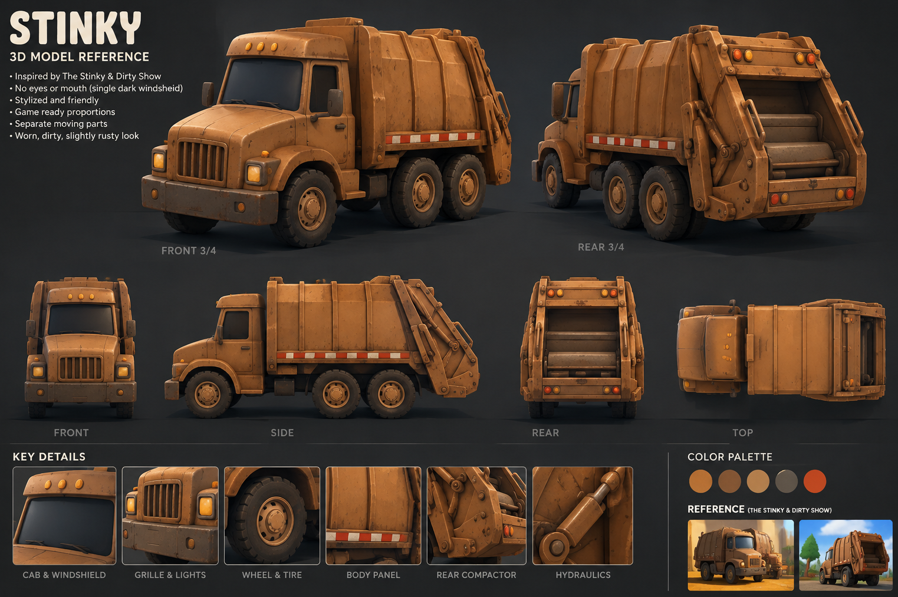

Reference

Review only. Compare the hood, single windshield, six tires, ribbed body and rear hopper. The playable truck is unchanged.
This viewer loads stinky.glb, exported from the editable Blender project. The model uses no image billboards.
Six-view reference comparison ↗